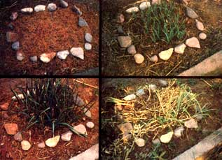

LEFT: The original ""mistake"" that started it all. TOP, CENTER: The first ""real"" fall planting of garlic didn't look like much, until . . . TOP, RIGHT: . . . the first of April, when it really began to ""take off'. ABOVE, CENTER: By May 1, the patch's growth had become luxurious, and . . . ABOVE, RIGHT: . . . the garlic was ready to harvest in mid-June.